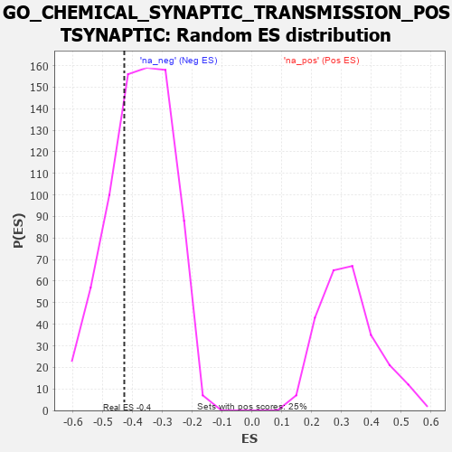

| | | Dataset | 7d |
| Phenotype | NoPhenotypeAvailable |
| Upregulated in class | na_neg |
| GeneSet | GO_CHEMICAL_SYNAPTIC_TRANSMISSION_POSTSYNAPTIC |
| Enrichment Score (ES) | -0.4275346 |
| Normalized Enrichment Score (NES) | -1.1388255 |
| Nominal p-value | 0.29679143 |
| FDR q-value | 0.7111277 |
| FWER p-Value | 1.0 |
Table: GSEA Results Summary
 Fig 1: Enrichment plot: GO_CHEMICAL_SYNAPTIC_TRANSMISSION_POSTSYNAPTIC
Fig 1: Enrichment plot: GO_CHEMICAL_SYNAPTIC_TRANSMISSION_POSTSYNAPTIC
Profile of the Running ES Score & Positions of GeneSet Members on the Rank Ordered List
| PROBE | GENE SYMBOL | GENE_TITLE | RANK IN GENE LIST | RANK METRIC SCORE | RUNNING ES | CORE ENRICHMENT | | 1 | GSK3A | | | 351 | 0.745 | 0.0183 | No |
| 2 | AKT1 | | | 1040 | 0.476 | -0.0283 | No |
| 3 | MEF2C | | | 1054 | 0.473 | 0.0098 | No |
| 4 | GLRA2 | | | 1892 | 0.321 | -0.0686 | No |
| 5 | MTMR2 | | | 3126 | 0.133 | -0.2126 | No |
| 6 | CDK5 | | | 3480 | 0.080 | -0.2503 | No |
| 7 | GLRA1 | | | 3957 | 0.001 | -0.3101 | No |
| 8 | ADRB2 | | | 4352 | -0.068 | -0.3540 | No |
| 9 | LRRK2 | | | 4467 | -0.087 | -0.3610 | No |
| 10 | P2RX4 | | | 4813 | -0.161 | -0.3909 | No |
| 11 | DRD2 | | | 5088 | -0.221 | -0.4068 | Yes |
| 12 | SSH1 | | | 5254 | -0.258 | -0.4059 | Yes |
| 13 | PTEN | | | 5262 | -0.261 | -0.3849 | Yes |
| 14 | RIMS2 | | | 5272 | -0.265 | -0.3637 | Yes |
| 15 | CELF4 | | | 5275 | -0.266 | -0.3417 | Yes |
| 16 | NPY2R | | | 5331 | -0.281 | -0.3250 | Yes |
| 17 | MPP2 | | | 5367 | -0.288 | -0.3053 | Yes |
| 18 | GRIN1 | | | 5381 | -0.291 | -0.2825 | Yes |
| 19 | DLG4 | | | 5388 | -0.293 | -0.2586 | Yes |
| 20 | DGKI | | | 5725 | -0.384 | -0.2686 | Yes |
| 21 | GLRB | | | 5776 | -0.398 | -0.2415 | Yes |
| 22 | GRID2 | | | 6170 | -0.528 | -0.2466 | Yes |
| 23 | GLRA3 | | | 6469 | -0.648 | -0.2297 | Yes |
| 24 | P2RX5 | | | 6576 | -0.699 | -0.1844 | Yes |
| 25 | GSK3B | | | 6719 | -0.768 | -0.1377 | Yes |
| 26 | GRIK2 | | | 7552 | -1.471 | -0.1190 | Yes |
| 27 | GRIK5 | | | 7792 | -2.044 | 0.0225 | Yes |
Table: GSEA details [plain text format]

Fig 2: GO_CHEMICAL_SYNAPTIC_TRANSMISSION_POSTSYNAPTIC: Random ES distribution
Gene set null distribution of ES for GO_CHEMICAL_SYNAPTIC_TRANSMISSION_POSTSYNAPTIC